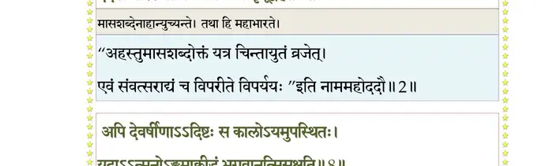
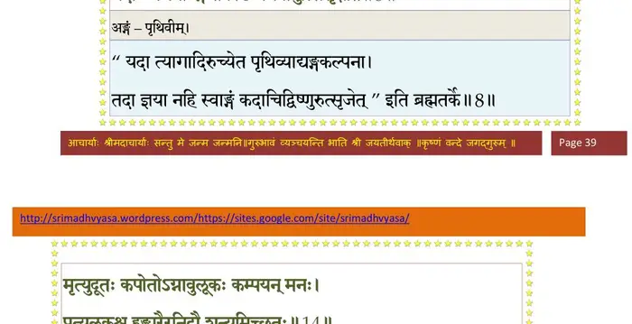
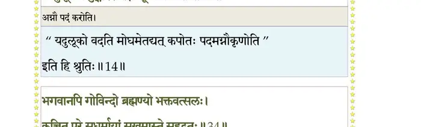
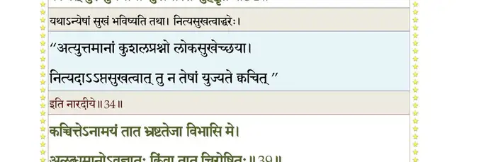
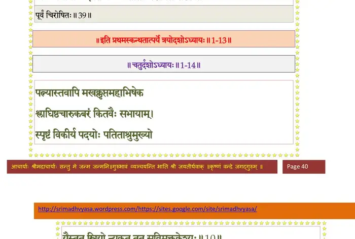

स्कन्ध 1 · अध्याय 13
श्लोक १
सूत उवाच–
सम्प्रस्थिते द्वारकायां जिष्णौ बन्धुदिदृक्षया ।
ज्ञातुं मायामनुष्यस्य वासुदेवस्य चेहितम्।। १ ।।
सम्प्रस्थिते द्वारकायां जिष्णौ बन्धुदिदृक्षया ।
ज्ञातुं मायामनुष्यस्य वासुदेवस्य चेहितम्।। १ ।।
श्लोक २
व्यतीताः कतिचिन्मासास्तदा तु शतशो नृपः ।
१ददर्श घोररूपाणि निमित्तानि भृगूद्वह।। २ ।।
१ददर्श घोररूपाणि निमित्तानि भृगूद्वह।। २ ।।
भागवततात्पर्यनिर्णय

श्लोक ३
कालस्य च गतिं रौद्रां विपर्यस्तर्तुधर्मिणः ।
पापीयसीं नृणां वार्तां क्रोधलोभानृतात्मनाम्।। ३ ।।
पापीयसीं नृणां वार्तां क्रोधलोभानृतात्मनाम्।। ३ ।।
श्लोक ४
जिह्मप्रायं व्यवहृतं साध्यमिश्रञ्च सौहृदम् ।
पितृमातृसुहृद्भ्रातृदम्पतीनाऽञ्च कल्किताम्।। ४ ।।
पितृमातृसुहृद्भ्रातृदम्पतीनाऽञ्च कल्किताम्।। ४ ।।
श्लोक ५
निमित्तान्यप्यरिष्टानि काले त्वनुगते नृणाम् ।
लोभाद्यधर्मप्रकृतिं दृष्ट्वोवाचानुजं नृपः।। ५ ।।
लोभाद्यधर्मप्रकृतिं दृष्ट्वोवाचानुजं नृपः।। ५ ।।
श्लोक ६
युधिष्ठिर उवाच–
सम्प्रेषिते द्वारकायां जिष्णौ बन्धुदिदृक्षया ।
ज्ञातुञ्च पुण्यश्लोकस्य कृष्णस्य च विचेष्टितम्।। ६ ।।
सम्प्रेषिते द्वारकायां जिष्णौ बन्धुदिदृक्षया ।
ज्ञातुञ्च पुण्यश्लोकस्य कृष्णस्य च विचेष्टितम्।। ६ ।।
श्लोक ७
गताः सप्ताधुना मासा भीमसेन तवानुजः ।
नायाति कस्य वा हेतोर्नाहं वेदेदमञ्जसा।। ७ ।।
नायाति कस्य वा हेतोर्नाहं वेदेदमञ्जसा।। ७ ।।
श्लोक ८
अपि देवर्षिणाऽऽदिष्टः स कालः प्रत्युपस्थितः ।
यदाऽऽत्मनोऽङ्गमाक्रीडं भगवानुत्सिसृक्षति।। ८ ।।
यदाऽऽत्मनोऽङ्गमाक्रीडं भगवानुत्सिसृक्षति।। ८ ।।
भागवततात्पर्यनिर्णय

श्लोक ९
येषां नः सम्पदो राज्यं दाराः प्राणाः कुलं प्रजाः ।
आसन् सपत्नविजयो लोकाश्च यदनुग्रहात्।। ९ ।।
आसन् सपत्नविजयो लोकाश्च यदनुग्रहात्।। ९ ।।
श्लोक १०
पश्योत्पातान्नरव्याघ्र भौमान् दिव्यान् सदैहिकान् ।
घोरमाशंसतोऽदूराद्भयं नो बुद्धिमोहनम्।। १० ।।
घोरमाशंसतोऽदूराद्भयं नो बुद्धिमोहनम्।। १० ।।
श्लोक ११
ऊर्वक्षिबाहवो मह्यं स्फुरन्त्यङ्ग पुनः पुनः ।
वेपथुश्चापि हृदये आराद्दास्यन्ति विप्रियम्।। ११ ।।
वेपथुश्चापि हृदये आराद्दास्यन्ति विप्रियम्।। ११ ।।
श्लोक १२
शिवैषोद्यन्तमरुणमभिरौत्यनलानना ।
मामङ्ग सारमेयोऽयमभिधावत्यभीतवत्।। १२ ।।
मामङ्ग सारमेयोऽयमभिधावत्यभीतवत्।। १२ ।।
श्लोक १३
शस्ताः कुर्वन्ति मां सव्यं दक्षिणं पशवोऽपरे ।
वाहांश्च पुरुषव्याघ्र लक्षये रुदतो मम।। १३ ।।
वाहांश्च पुरुषव्याघ्र लक्षये रुदतो मम।। १३ ।।
श्लोक १४
मृत्युदूतः कपोतोऽग्नावुलूकः कम्पयन्मनः ।
प्रत्युलूकश्च हुङ्कारैरनिद्रौ शून्यमिच्छतः।। १४ ।।
प्रत्युलूकश्च हुङ्कारैरनिद्रौ शून्यमिच्छतः।। १४ ।।
भागवततात्पर्यनिर्णय

श्लोक १५
धूम्रा दिशः परिधयः कम्पते कुः (भूः) सहाद्रिभिः ।
निर्घातश्च महांस्तात साकञ्च स्तनयित्नुभिः।। १५ ।।
निर्घातश्च महांस्तात साकञ्च स्तनयित्नुभिः।। १५ ।।
श्लोक १६
वायुर्वाति खरस्पर्शो रजसा विसृजंस्तमः ।
असृग्वर्षन्ति जलदाः बीभत्समिव सर्वतः।। १६ ।।
असृग्वर्षन्ति जलदाः बीभत्समिव सर्वतः।। १६ ।।
श्लोक १७
सूर्यं हतप्रभं पश्य ग्रहमर्दं मिथो दिवि ।
ससङ्कुले तु भगणे ज्वलिते इव रोदसी।। १७ ।।
ससङ्कुले तु भगणे ज्वलिते इव रोदसी।। १७ ।।
श्लोक १८
नद्यो नदाश्च क्षुभिताः सरांसि च मनांसि च ।
न ज्वलत्यग्निराज्येन कालोऽयं किं विधास्यति।। १८ ।।
न ज्वलत्यग्निराज्येन कालोऽयं किं विधास्यति।। १८ ।।
श्लोक १९
न पिबन्ति स्तनं वत्साः न दुह्यन्ति च मातरः ।
रुदन्त्यश्रुमुखा गावो न हृष्यन्त्यृषभा व्रजे ।
दैवतानि रुदन्तीव स्विद्यन्ति प्रचलन्ति च।। १९ ।।
रुदन्त्यश्रुमुखा गावो न हृष्यन्त्यृषभा व्रजे ।
दैवतानि रुदन्तीव स्विद्यन्ति प्रचलन्ति च।। १९ ।।
श्लोक २०
इमे जनपदाः ग्रामाः पुरोद्यानाकराश्रमाः ।
भ्रष्टश्रियो निरानन्दाः किमघं दर्शयन्ति नः।। २० ।।
भ्रष्टश्रियो निरानन्दाः किमघं दर्शयन्ति नः।। २० ।।
श्लोक २१
मन्य एतैर्महोत्पातैर्नूनं भगवतः पदैः ।
अनन्यपुरुषस्त्रीभिर्हीना भूर्हतसौभगा।। २१ ।।
अनन्यपुरुषस्त्रीभिर्हीना भूर्हतसौभगा।। २१ ।।
श्लोक २२
इति चिन्तयतस्तस्य दृष्टारिष्टेन चेतसा ।
राज्ञः प्रत्यागमद्ब्रह्मन्यदुपुर्याः कपिध्वजः।। २२ ।।
राज्ञः प्रत्यागमद्ब्रह्मन्यदुपुर्याः कपिध्वजः।। २२ ।।
श्लोक २३
तं पादयोर्निपतितमयथापूर्वमातुरम् ।
अधोवदनमब्बिन्दून्मुञ्चन्तं नयनाब्जयोः।। २३ ।।
अधोवदनमब्बिन्दून्मुञ्चन्तं नयनाब्जयोः।। २३ ।।
श्लोक २४
विलोक्योद्विग्नहृदयो विच्छायमनुजं नृपः ।
पृच्छति स्म सुहृन्मध्ये संस्मरन्नारदेरितम्।। २४ ।।
पृच्छति स्म सुहृन्मध्ये संस्मरन्नारदेरितम्।। २४ ।।
श्लोक २५
युधिष्ठिर उवाच–
कच्चिदानर्तपुर्यां नः स्वजनाः सुखमासते ।
मधुभोजदशार्हार्हसात्वतान्धकवृष्णयः।। २५ ।।
कच्चिदानर्तपुर्यां नः स्वजनाः सुखमासते ।
मधुभोजदशार्हार्हसात्वतान्धकवृष्णयः।। २५ ।।
श्लोक २६
शूरो मातामहः कच्चित्स्वस्त्यास्ते चाथ मारिषः ।
मातुलः सानुजः कच्चित्कुशल्यानकदुन्दुभिः।। २६ ।।
मातुलः सानुजः कच्चित्कुशल्यानकदुन्दुभिः।। २६ ।।
श्लोक २७
सप्तस्वसारः तत्पत्न्यो मातुलान्यः सहात्मजाः ।
आसते सस्नुषा क्षेमं देवकीप्रमुखा स्त्रियः।। २७ ।।
आसते सस्नुषा क्षेमं देवकीप्रमुखा स्त्रियः।। २७ ।।
श्लोक २८
कच्चिद्राजाऽऽहुको जीवत्यसत्पुत्रोऽस्य चानुजः ।
हृदीकः ससुतोऽक्रूरो जयन्तगदसारणाः।। २८ ।।
हृदीकः ससुतोऽक्रूरो जयन्तगदसारणाः।। २८ ।।
श्लोक २९
आसते कुशलं कच्चिद्ये च शत्रुजिदादयः ।
कच्चिदास्ते सुखं रामो भगवान् सात्वतां पतिः।। २९ ।।
कच्चिदास्ते सुखं रामो भगवान् सात्वतां पतिः।। २९ ।।
श्लोक ३०
प्रद्युम्नः सर्ववृष्णीनां सुखमास्ते महारथः ।
गम्भीररयोऽनिरुद्धो वर्तते भगवानुत।। ३० ।।
गम्भीररयोऽनिरुद्धो वर्तते भगवानुत।। ३० ।।
श्लोक ३१
सुषेणश्चारुदेष्णश्च साम्बो जाम्बवतीसुतः ।
अन्ये च कार्ष्णिप्रवराः सपुत्राः ऋषभादयः।। ३१ ।।
अन्ये च कार्ष्णिप्रवराः सपुत्राः ऋषभादयः।। ३१ ।।
श्लोक ३२
तथैवानुचराः शौरेः श्रुतसेनोद्धवादयः ।
सुनन्दनन्दशीर्षण्या ये चान्ये सात्वतर्षभाः।। ३२ ।।
सुनन्दनन्दशीर्षण्या ये चान्ये सात्वतर्षभाः।। ३२ ।।
श्लोक ३३
अपि स्वस्त्यासते सर्वे रामकृष्णभुजाश्रयाः ।
अपि स्मरन्ति कुशलमस्माकं बद्धसौहृदाः।। ३३ ।।
अपि स्मरन्ति कुशलमस्माकं बद्धसौहृदाः।। ३३ ।।
श्लोक ३४
भगवानपि गोविन्दो ब्रह्मण्यो भक्तवत्सलः ।
कच्चित्पुरे सुधर्मायां सुखमास्ते सुहृद्वृतः।। ३४ ।।
कच्चित्पुरे सुधर्मायां सुखमास्ते सुहृद्वृतः।। ३४ ।।
भागवततात्पर्यनिर्णय

श्लोक ३५
मङ्गलाय च लोकानां क्षेमाय च भवाय च ।
आस्ते यदुकुलाम्भोधावाद्योऽनन्तसखः पुमान्।। ३५ ।।
आस्ते यदुकुलाम्भोधावाद्योऽनन्तसखः पुमान्।। ३५ ।।
श्लोक ३६
यद्बाहुदण्डैर्गुप्तायां स्वपुर्यां यदवोऽर्चिताः ।
क्रीडन्ति परमानन्दं महापौरुषिका इव।। ३६ ।।
क्रीडन्ति परमानन्दं महापौरुषिका इव।। ३६ ।।
श्लोक ३७
यत्पादशुश्रूषणमुख्यकर्मणा सत्यादयो व्द्यष्टसहस्त्रयोषितः ।
निर्जित्य सङ्ख्ये त्रिदशांस्तदाशिषो हरन्ति वज्रायुधवल्लभोचिताः।। ३७ ।।
निर्जित्य सङ्ख्ये त्रिदशांस्तदाशिषो हरन्ति वज्रायुधवल्लभोचिताः।। ३७ ।।
श्लोक ३८
यद्बाहुदण्डाभ्युदयानुजीविनो यदुप्रवीराः ह्यकुतोभयाः मुहुः ।
अधिक्रमन्त्यङ्घ्रिभिराहतां बलात् सभां सुधर्मां सुरसत्तमोचिताम् ।।३८।।
अधिक्रमन्त्यङ्घ्रिभिराहतां बलात् सभां सुधर्मां सुरसत्तमोचिताम् ।।३८।।
श्लोक ३९
कच्चित्तेऽनामयं तात भ्रष्टतेजा विभासि मे ।
अलब्धमानोऽवज्ञातः किं वा तात चिरोषितः।। ३९ ।।
अलब्धमानोऽवज्ञातः किं वा तात चिरोषितः।। ३९ ।।
भागवततात्पर्यनिर्णय

श्लोक ४०
कच्चिन्नाभिहतो भावैः शब्दादिभिरमङ्गलैः ।
न दत्तं युक्तमर्थिभ्यः आशया यत्प्रतिश्रुतम्।। ४० ।।
न दत्तं युक्तमर्थिभ्यः आशया यत्प्रतिश्रुतम्।। ४० ।।
श्लोक ४१
कच्चित्त्वं ब्राह्यणं बालं गां वृद्धं रोगिणं स्त्रियम् ।
शरण्योपसृतं सत्वं नात्याक्षीः शरणप्रदः।। ४१ ।।
शरण्योपसृतं सत्वं नात्याक्षीः शरणप्रदः।। ४१ ।।
श्लोक ४२
कच्चित्त्वं नागमोऽगम्यां गम्यां वाऽसत्कृतां स्त्रियम् ।
पराजितो वाऽथ भवान्नोत्तमैर्नाधमैः पथि।। ४२ ।।
पराजितो वाऽथ भवान्नोत्तमैर्नाधमैः पथि।। ४२ ।।
श्लोक ४३
अपिस्वित्पर्यभुङ्थास्त्वं १सम्भोज्यान्वृद्धबालकान् ।
जुगुप्सितं कर्म किञ्चित्कृतवानसदक्षमम्।। ४३ ।।
जुगुप्सितं कर्म किञ्चित्कृतवानसदक्षमम्।। ४३ ।।
श्लोक ४४
कच्चित्प्रेष्ठतमेनाथ हृदयेनात्मबन्धुना ।
शून्योऽसि रहितो नित्यं मन्यसे तेऽन्यथा हि रुक्।। ४४ ।।
शून्योऽसि रहितो नित्यं मन्यसे तेऽन्यथा हि रुक्।। ४४ ।।
।। इति श्रीमद्भागवते प्रथमस्कन्धे त्रयोदशोऽध्यायः ।।